Conseguir la imagen de referencia
Busca o genera una imagen clara y bien iluminada del objeto que deseas crear en 3D. Por ejemplo, puedes seleccionar un diseño desde un catálogo en línea como el Catálogo de Mesas de Alcira Guevara (https://alciraguevara.com/catalogo/catalogo-mesas/).
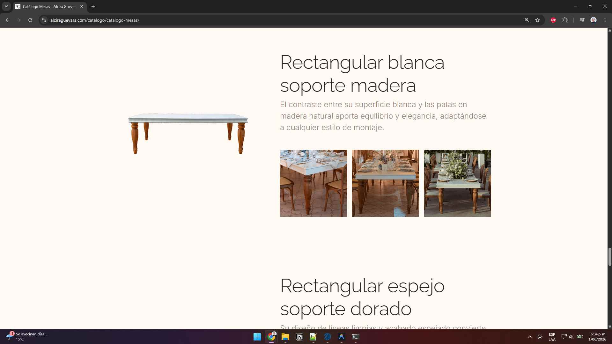
Aislar y mejorar la imagen con IA
Si el objeto no está aislado de su fondo o la imagen tiene baja resolución, utiliza Inteligencia Artificial para prepararla. Puedes subir la imagen a Gemini (https://gemini.google.com/app) y usar los siguientes prompts: • Para mejorar la calidad: "Aumenta la calidad de esta imagen de una mesa, manteniendo su estructura y detalles" • Para aislar el objeto: "Aisla esta mesa de su contexto y generala sobre fondo blanco, manteniendo su estructura y detalles"
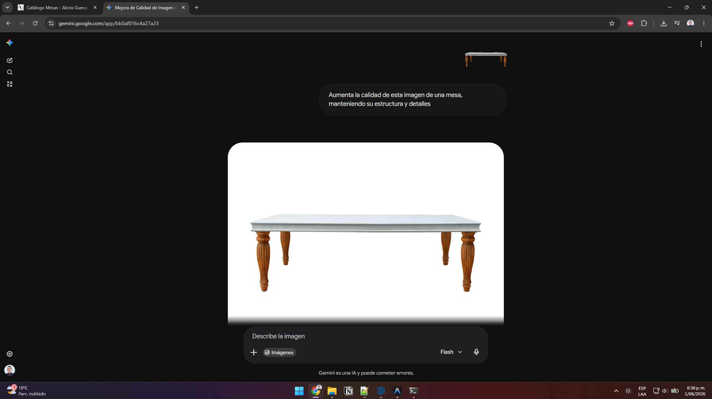
Subir a Hunyuan 3D Studio
Ingresa a la plataforma de generación 3D Hunyuan (https://3d.hunyuanglobal.com/studio/creation/role/geo) y sube tu imagen aislada. Ajusta el recuento de caras base a un mínimo de 50,000 polígonos para asegurar que capture todos los relieves y la estructura principal del objeto.
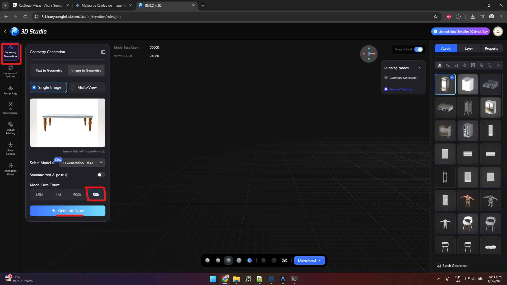
Realizar la retopología automática con IA
Las mallas generadas por IA suelen ser desorganizadas y pesadas. Dirígete a la pestaña 'Retopology' en Hunyuan 3D Studio. Elige topología de cuadriláteros ('Quads') o triángulos, define la densidad (como calidad 'Medium' de 50k polígonos) y haz clic en 'Generate Now' para que la IA ordene la malla automáticamente en segundos.
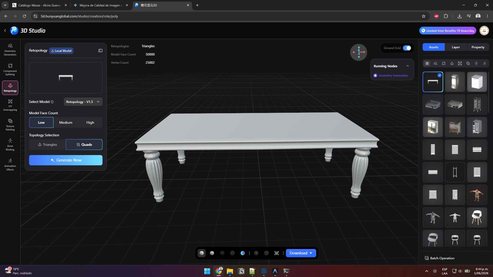
Proyección de texturas (Original vs Retopología)
Si la retopología de la IA quedó perfectamente limpia, proyecta la textura sobre ella. Si necesitas el máximo detalle porque el objeto es protagonista o muy importante en tu escena, regresa al objeto original sin retopología para generarle la textura con la máxima fidelidad.
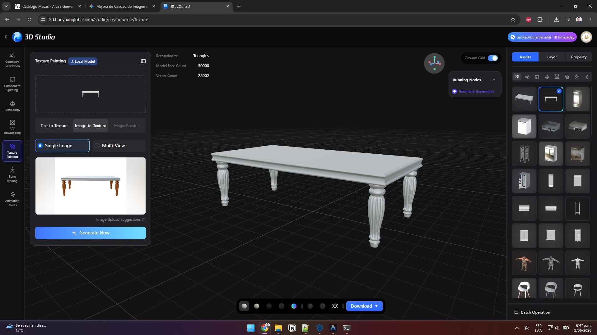
Descargar el archivo en formato GLB
Una vez finalizada la generación de la textura y conforme con el resultado, procede a descargar el modelo 3D únicamente en formato .glb para su posterior importación.
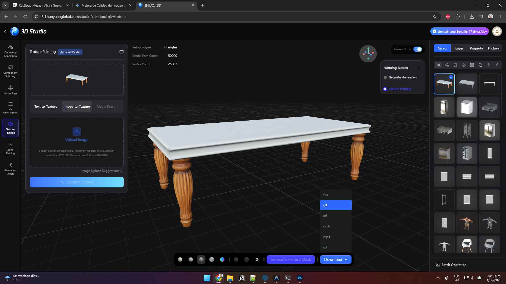
Importación directa a SketchUp
Si vas a utilizar pocos objetos de este tipo en la escena o tienes mucho afán porque aparecen en segundo plano, importa el archivo (.glb) directamente a tu modelo de SketchUp.
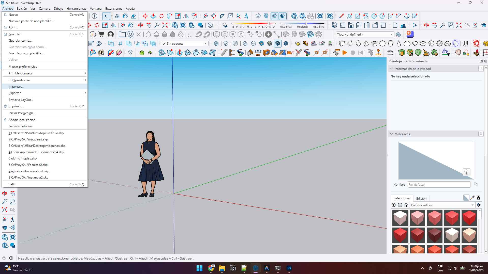
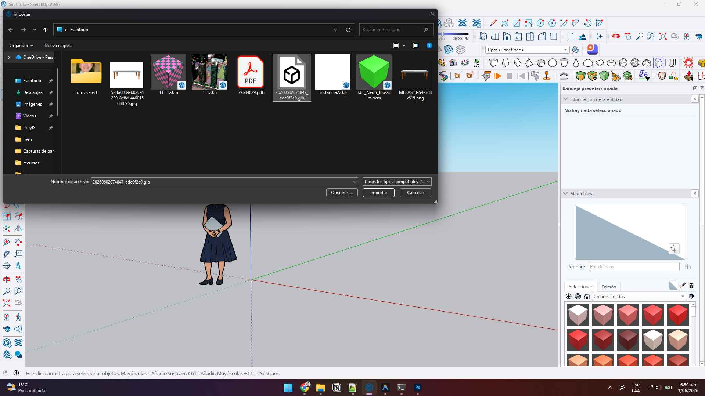
Escalar a dimensiones reales
Crea un cubo de referencia con las dimensiones reales en SketchUp y escala tu objeto importado de acuerdo con él. En este caso, al conocer únicamente la altura estándar de la mesa (0.75m), escalamos el modelo importado en función de esa altura exacta.
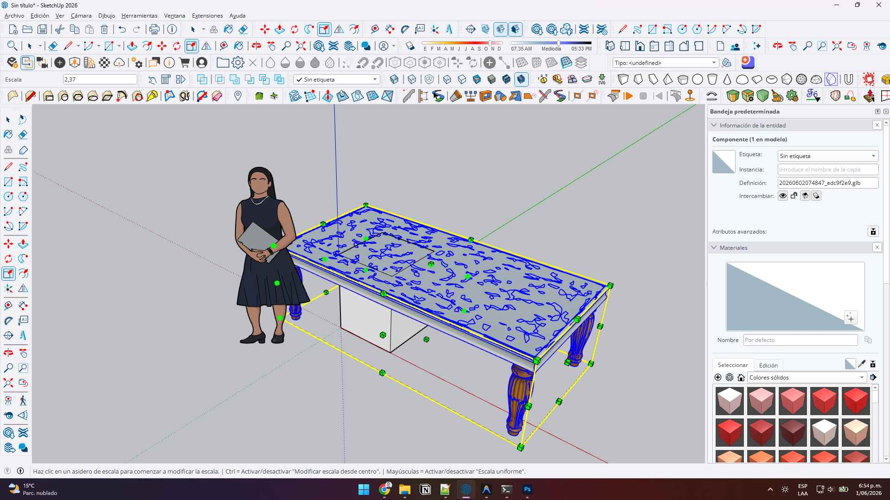
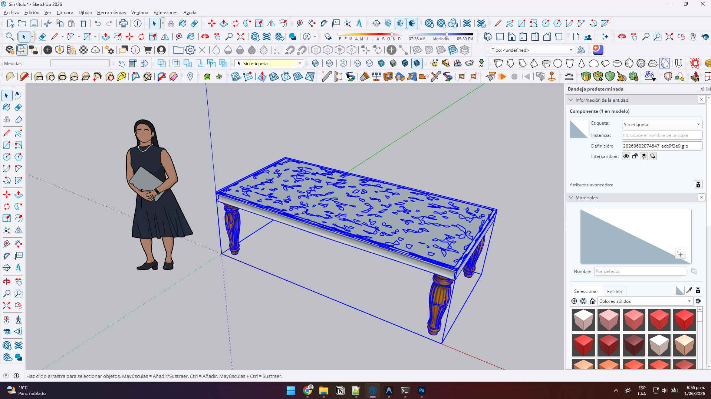
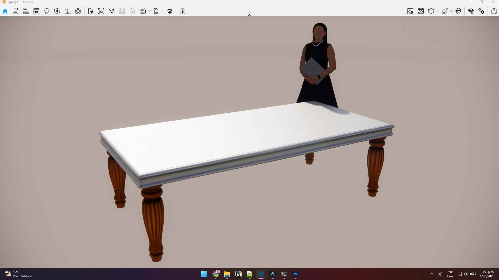
Creación de Proxies (Escenas complejas)
Si vas a repetir esta mesa o múltiples objetos similares muchas veces en tu escena, no los importes directamente de forma masiva. En su lugar, debes crear proxies en Enscape para mantener tu SketchUp ultra fluido (sigue los pasos en el tutorial: https://render3dglobal.com/blog/crear-proxies-enscape.html).
El Impacto de la Inteligencia Artificial en la Creación de Modelos 3D Gratuitos
El ecosistema de la visualización arquitectónica y el diseño está experimentando una revolución sin precedentes impulsada por la Inteligencia Artificial 3D. Anteriormente, modelar un objeto con un nivel de detalle medio o alto requería horas de trabajo manual, desde la creación de geometrías básicas hasta el mapeado UV detallado. Hoy en día, gracias a herramientas avanzadas de generación a partir de imágenes como Hunyuan 3D Studio, es posible obtener modelos 3D gratis en cuestión de segundos, listos para ser pulidos y comercializados.
¿Cómo funciona el flujo de trabajo ágil con IA?
El secreto para pasar de una simple imagen de catálogo (como las mesas de Alcira Guevara) a un archivo tridimensional apto para motores de renderizado profesional reside en la combinación estratégica de herramientas. El primer paso crucial es la mejora y aislamiento de la imagen. La IA generativa de modelado necesita comprender perfectamente los límites y detalles del objeto. Utilizar asistentes conversacionales avanzados como Gemini con instrucciones precisas de prompts permite aumentar la resolución y aislar el fondo en un color blanco puro, reduciendo el ruido visual para optimizar el procesamiento en Hunyuan 3D.
💡 Consejo de Monetización 3D
El mercado de los assets tridimensionales tiene una demanda masiva. Diseñadores de interiores, desarrolladores de videojuegos y arquitectos buscan constantemente elementos decorativos únicos, mobiliario específico y accesorios realistas. Al dominar este flujo ágil de creación asistida por IA, puedes generar catálogos de cientos de objetos optimizados en tiempo récord y venderlos en plataformas líderes de stock 3D, cobrando en dólares o miles de pesos por pack o por descarga individual.
La importancia crítica de la Retopología con IA y la Aplicación de Texturas
Cualquier profesional del sector sabe que una malla generada por IA sin procesar (que suele tener hasta 1.5 millones de polígonos) es completamente inutilizable en proyectos arquitectónicos o de diseño. Saturaría por completo la memoria de programas como SketchUp, Revit o Blender. Por suerte, plataformas avanzadas como Hunyuan 3D Studio ahora integran un módulo de retopología automática con IA. Este módulo simplifica y ordena la estructura de la malla en segundos, permitiendo elegir una topología basada en cuadriláteros (Quads) o triángulos, y ajustar la densidad a niveles óptimos (como 50k polígonos en calidad media). De esta manera, el proceso se automatiza por completo con inteligencia artificial, logrando un modelo extremadamente ligero, limpio y listo para recibir texturas impecables sin necesidad de modelado manual.
¿Por qué exportar y trabajar en formato GLB?
El formato GLB (gITF Binary) se ha convertido en el estándar indiscutible para la transferencia rápida de assets 3D en la web y aplicaciones interactivas. Almacena la geometría, las texturas PBR y las propiedades de materiales en un único archivo binario altamente optimizado. Esto facilita una importación fluida a SketchUp y asegura que las coordenadas de textura se mantengan intactas, permitiendo escalar el modelo según referencias de dimensiones reales (como un cubo de 0.75m de altura) con total precisión y rapidez.
Integrar la Inteligencia Artificial en tu flujo diario no reemplaza tu talento; multiplica tu velocidad y capacidad de entrega, permitiéndote tomar más clientes simultáneamente y elevar las ganancias de tu estudio de visualización.
¿Quieres delegar tu renderizado 3D?
Si tienes proyectos con cronogramas exigentes, confía en profesionales. Entregamos visualizaciones estéticas de alto impacto en tiempo récord.